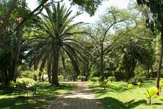
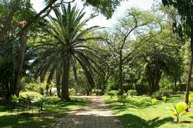

Normas Ecología
En Medellín, nos encontramos con un gran número de puntos de ecología. Estos úntos de ecología son
especialmente destacados por su excelente calidad, la calidad de los proiductos y la calidad de los
servivios.
Sin embargo es importante tener en cuenta las normas para mantener el entorno ecológico en óptimas
condiciones.
Respetar la flora y fauna
Evitar tocar, recolectar o dañar plantas y animales en su hábitar natural.
No arrojar basura
Utilizar los contenedores adecuados y mantener los espacios limpios.
Seguri los senderos designados
Caminar solo por las áreas permitidas para preservar la vegetación y evitar la erosión.
No alimentar a los animales
Evitar darles comida a los animales para prevenir dependencias y alterar su comportamiento
natural
No hacer fuego
Prohibido encender fogatas o usar dispositivos de calefacción, especialmente en áreas no
designadas.
Controlar a las mascotas
En caso de permitirse, mantener a las mascotas bajo control y recoger sus excrementos.
Respetar las señales y normativas
Seguir las indicaciones y reglamentos establecidos para garantizar la seguridad y conservación
de área.
No hacer ruido excesivo
Mantener un nivel de ruido bajo para no perturbar a la fauna ni otro visitantes.
Ser responsable con el agua y energía
Utilizar los recursos naturales de manera consciente y evitar desperdiciar agua y
energía.


 
